Proper default cowls
V5: the nose cowl reworked on your notes (the bottom, the drop, the exhaust, the scoop), the pods, and the cooling path to come. Quick renders, flat-shaded: the shapes, not the final look.
The bottom rounds, sits lower than the firewall, and lets the air and the exhaust out
Quick flat-shaded renders (quickshot.js), today against V5: side view, and head-on on the button above. On a nose engine:
- The bottom rounds out (your round B). It leaves the firewall level, carrying on the fuselage's bottom line, and rounds up into the front face. New generator rows: the bottom line's own bend (
keelShoulder,keelRound). - The bottom sits lower than the firewall's, vertically only, held until the bend. It is sized on your saved builds: 0.24 of the nose half-height at 70 hp down to 0.04 at 160 hp. Cub 8.0 cm (yours 7.9), Jodel 8.0 (8.7), C172 2.1 (1.9), ugly bi 6.0, STOL Cub 4.6.
- The top descends a little to meet the spinner (
deckShoulder,deckRound). - The exhaust's ramp. Where the drawn exhaust leaves, the skin is pressed into a shallow channel, open at the aft edge (
exCut2). - The chin scoop rides the bottom line (
scoopFollow): its top a third of its height inside the skin all along, so it can't float or dig in. - The bends make room for the engine. Where the drawn engine needs it, the bottom stays level longer and the top descends less (the Tiger Moth's inverted cylinders).
All of it is generator rows, absent by default, so every saved cowl is drawn to the bit and no flown number moves. A radial keeps its round NACA barrel. The generated radial nose below is smaller than its W-670, so its heads still show, as they do today: an open item.
Piper Cub
official · A-65
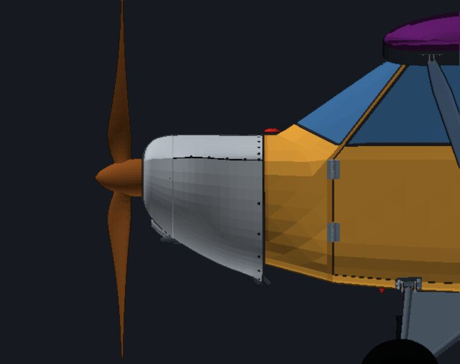
Cessna 172
official · 159 hp boxer
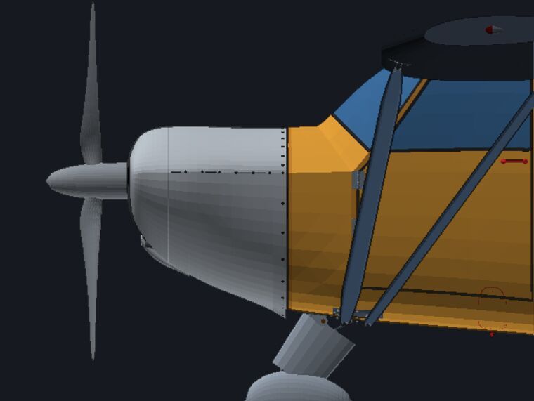
Jodel
official · A-65
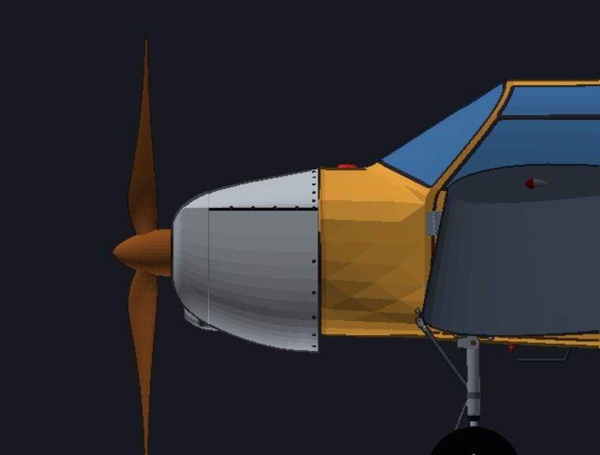
ugly bi
candidate · O-200
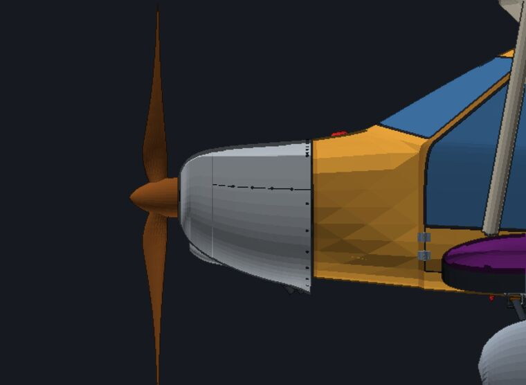
STOL Cub
candidate · Rotax 915 iS
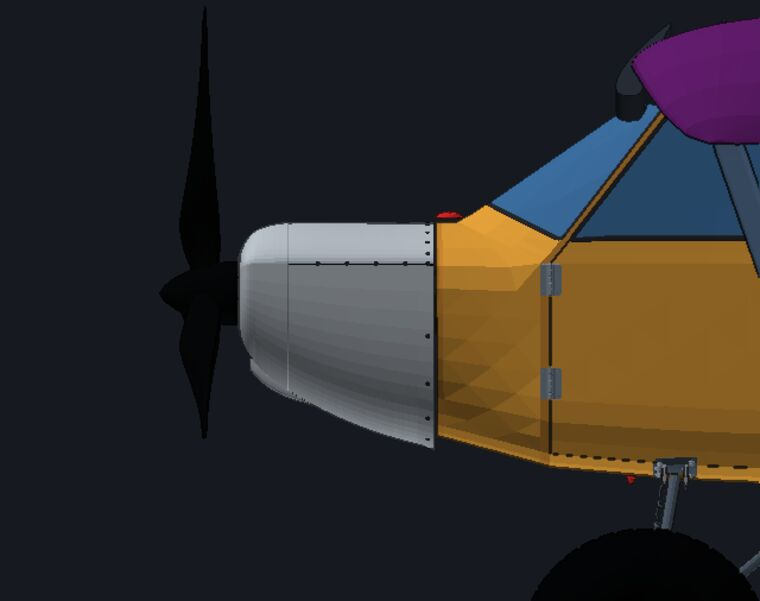
Tiger Moth-alike
candidate · Gipsy Major, inverted
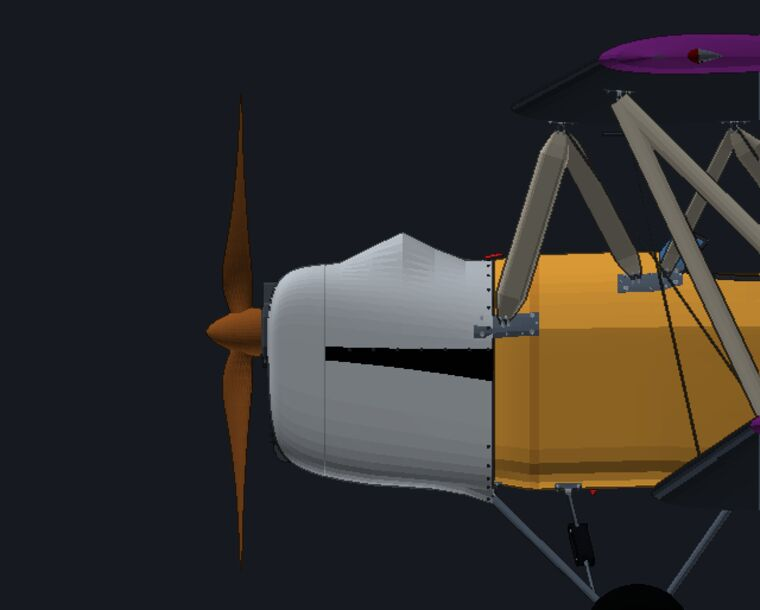
twinBoomFail
candidate · E-811 (electric: no drop, no ramp)
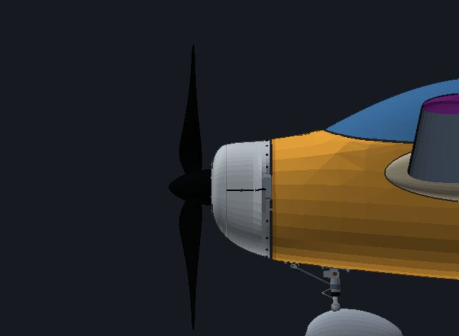
A generated radial nose
W-670 on a nose smaller than it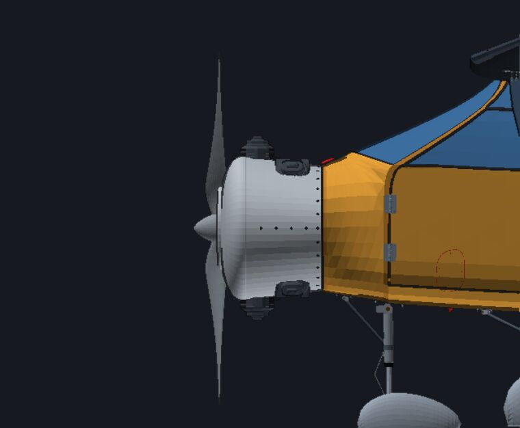
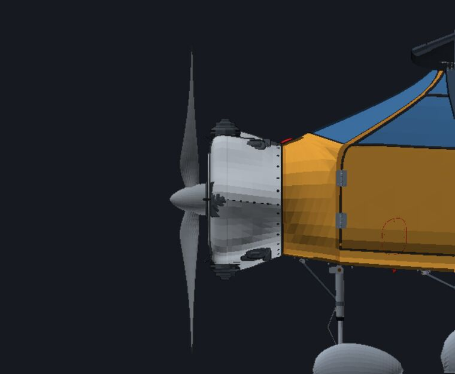
Twin busher floats 4b
official · Rotax 916 iS, pusher (the body rule from the aft face)
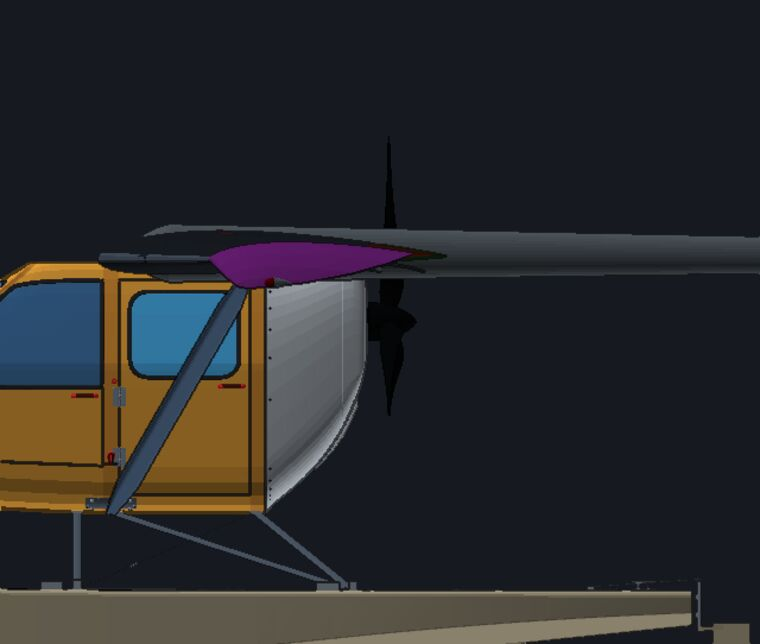
The pods, sized to the drawn engine
A straight pod round the engine as drawn (its top hardware and sides; exhaust stubs may leave underneath), with the engine's own section: a boxer wide and low, an in-line tall and boxy, a V a deep oval, a radial round with a helmet over each cylinder, a motor round and tight (its mount plate takes the pod's size), a turboprop round with its chin grown into the barrel. Each pod runs full section to the spinner, and the propeller moves forward by the lip. The over-the-wing plane wears the Engine mount tile's own aero nose: the bare nose of round 2 was my study plane, built by hand.
Boxer (O-320)
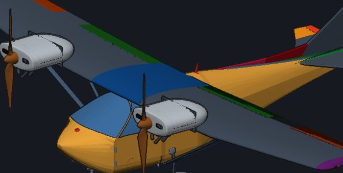
Rotax 915 iS
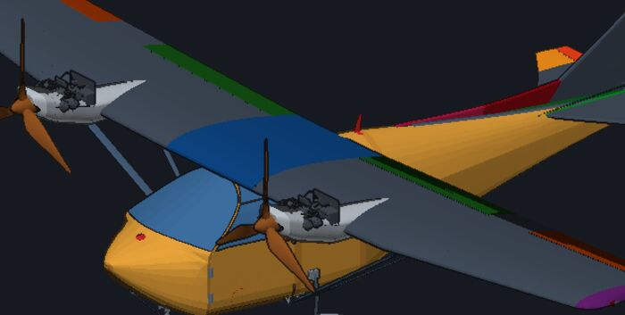
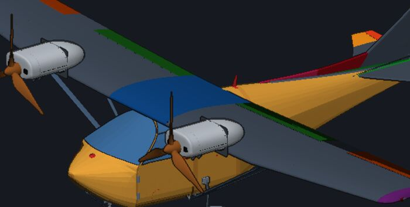
Inverted in-line (Gipsy Major)
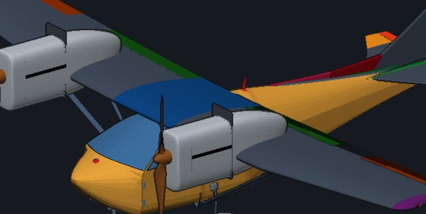
V (Hirth HM 508)
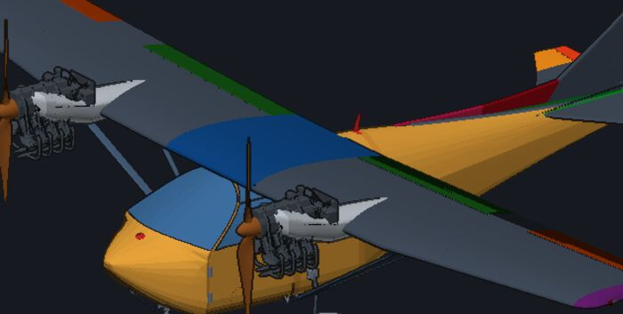
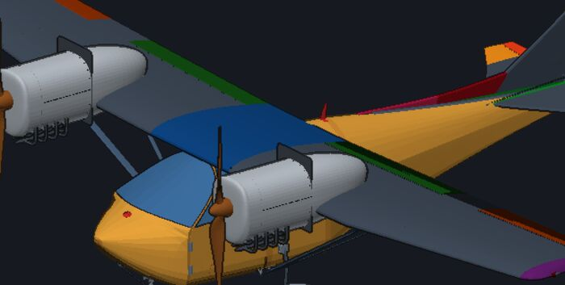
Radial (W-670), 7 helmets
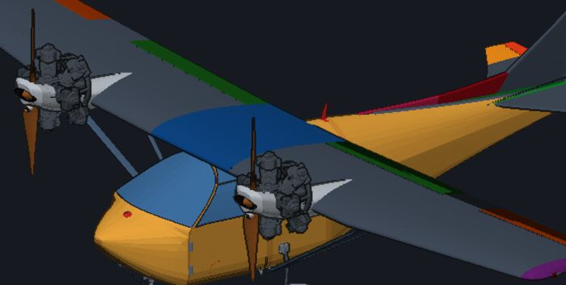
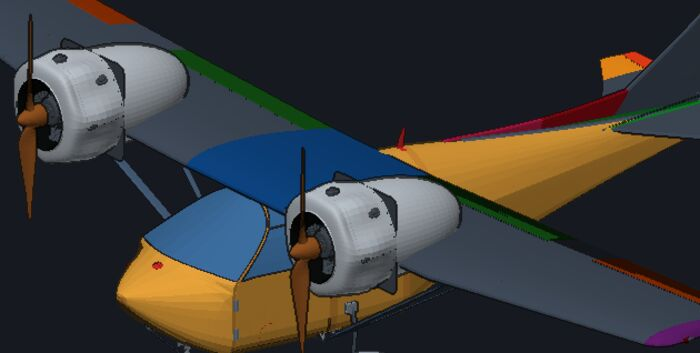
Turboprop (PT6A-114A)
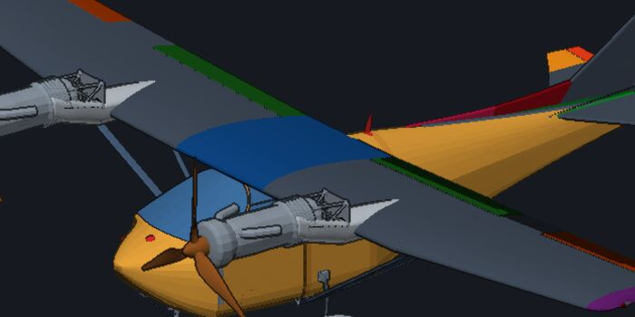
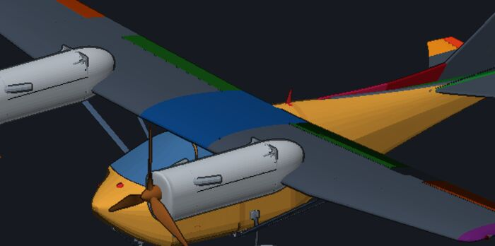
Electric (E-811)
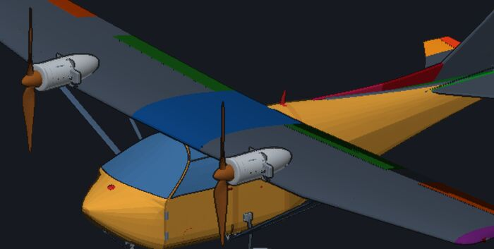
Over the wing (Rotax 915 on the pylon)
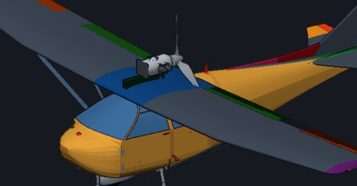
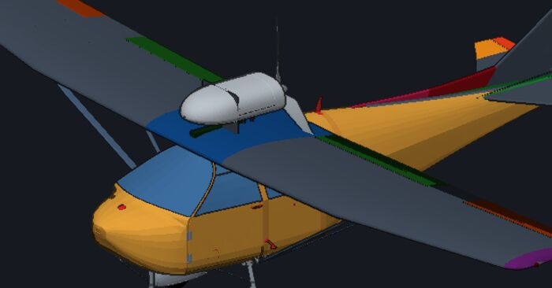
The engine per the reference, then the cowl round it
The DH.82 reference match puts the propeller's line where the build has it (engY 0.21). The Gipsy is inverted, and drawn 0.705 m tall against the real Gipsy Major's 0.752 m (All-Aero). So it stays. The cowl folds engY into its axis (the ring is now on the spinner) and is built round the engine's own box. One hump does not fit the real bonnet: our engine generator draws an inverted in-line's induction on top (entry G164), up to 0.34 m over the shaft where the type's bonnet runs 0.13-0.27 m. The cowl covers it with a blister near the firewall (the reference model's bonnet has one too). The proper fix is in the engine drawing.
Which of the plane's rows make a nose boxy
A study on 15 builds (crease_study.js): the firewall's outline fitted with the cowl's own section law. The RMS of the half-width is 5-65 mm with the waist on the plane's waistline, 4-37 mm with the waist free, and 2-23 mm free with the width at the top and bottom lines added (wAftTop / wAftBot). The hard ones are the sill-creased boxes (crSill ≥ 2: Cub, C172, Mosquito-alike): flanks full up to the waistline under a deck narrower than them; the C172's firewall is two-tiered. The rule keeps your waistline on a flat-sided nose, fits it on a round-topped cabin, and fits the roundness above and below. The two width rows would close most of the rest, but the flight model reads them (the cowl's wetted area and mass): they wait for A0's word.
The cooling path: in, through, out
Your proposal, as a cowl section of its own: every cowl has an inlet (the face's openings by engine type), auxiliary intakes (the chin scoop: the carburettor, an oil cooler, a radiator), and a heat outlet, one of:
- the lowered belly: the Cub's (V5's drop);
- the bottom exit with a lip: the C172's. It has no cowl flaps (the 182 does); the air is pushed down through the fins and leaves through the open aft edge of the lower cowl, with the exhaust pipe;
- side gills: the Carbon Cub's raised panel of slanted slots on the lower flank, behind the cylinders. Real 3D louvres, with their own thickness, rounded lips and dark throats, on a panel or cut cleanly into the skin, placed only where they clear the rivets, the split line, the seam, the ramp and the scoop;
- cowl flaps: the 182's, the radials'.
Each engine type on each mount
What a real cowl looks like there, what the new-plane chooser draws today (a generated build per row), and the default proposed.
| Mount | A real cowl | Ours today | The default proposed |
|---|---|---|---|
| Flat four / six A-65, O-200, O-320, IO-360, O-540, IO-550, Jabiru, VW | |||
| Nose | Matches the fuselage at the firewall, a blunt face, two inlets beside the spinner, the air out at the bottom rear. A slight taper in plan on most; cheeks over the heads where the engine is wider than the nose (PA-18). |  |
Body rule: the firewall's section, waist on the waistline; front on the thrust line, shorter, a little narrower; two inlets; cheeks over the heads only if they stand proud. |
| Pusher, aft face | The fuselage continues aft and closes onto the spinner; the air comes in through NACA ducts or a belly scoop, not at the propeller. |  |
Body rule from the aft face (its waist the pod's widest band), front on the propeller; no openings at the propeller end. |
| Over the wing | A pod on a pylon: a rounded nose with the inlet, a straight barrel round the engine, the propeller behind. | not offered by the chooser today | Pod: wider than high, the boxer's size, a tail cone. |
| Wing nacelles | A nose cowl in front of the wing (two inlets), then the nacelle runs straight back over or under the wing and ends in a cone behind it. |  |
Pod: wider than high round the heads, two inlets, a tail cone past the trailing edge. |
| Push-pull | A normal nose cowl in front; the rear engine buried in the fuselage end with a scoop on top. |  |
The nose rule in front, the pusher rule behind. |
| Rotax 912 / 915 / 916 geared boxer, liquid-cooled heads; the propeller shaft sits high | |||
| Nose | Rounder than a Lycoming cowl, the spinner high on the face (the gearbox), two inlets for the heads and a big chin mouth for the radiator. |  |
Body rule (the front centred on the high propeller shaft), two inlets, a chin mouth. |
| Over the wing | An engine on a tower or pylon over the cabin: a slim pod, the radiator under it, the propeller behind. |  |
Pod: wide and low, centred on the shaft, two inlets + chin mouth, a tail cone. |
| Two-stroke in-line Rotax 277, 503, 582 | |||
| Nose | A small hood over a narrow engine; the radiator behind a mouth under the spinner, or out in the air. |  |
Body rule, a chin mouth, no inlets on the face. |
| Pusher, aft face | Usually no cowl: the engine and its radiator stand in the air behind the pod. |  |
Off by default (G176: pushers have no cowl), the straight barrel when it is turned on. |
| Inverted in-line Gipsy Major, Walter Mikron, Ranger L-440 | |||
| Nose | Tall and narrow with flat sides, the propeller near the top (the cylinders hang below), small inlets or louvres low on the face. |  |
Body rule: the front tall and narrow on the high propeller, a pair of inlets low. |
| Wing nacelles | Slim nacelles, the engine's own width, flat sides, a cone behind the wing. |  |
Pod: taller than wide, boxy corners, a pair of low inlets, a tail cone. |
| V engine Hirth HM 508, Argus As 10, Merlin | |||
| Nose | A long faired nose, closed in front, an ogival spinner; the cooling in the wings or a chin / belly scoop. The air-cooled inverted Vs (Argus) breathe through a low opening. |  |
Body rule, closed face, a chin scoop; the faired preset stays for a Spitfire. |
| Wing nacelles | Long slim nacelles, the radiators in the wing roots. |  |
Pod: a deep oval with rounded corners, closed face, a tail cone. |
| Radial Verner, Rotec, W-670, R-755, R-985, R-1340, R-1830, M-14P | |||
| Nose | Round, nearly a cylinder, the whole front open round the spinner with a rolled lip (the NACA cowl); cowl flaps at the rear. Early ones: exposed cylinders or a narrow Townend ring. |  |
Round barrel the engine's diameter, the open ring with a rolled lip (the approved radial preset, G154). |
| Wing nacelles | A round cowl in front of the wing, the nacelle behind it tapering to the trailing edge or past it. |  |
Pod: round, the engine's diameter, the open ring, a tail cone. |
| Three (nose + nacelles) | The nose radial plus one under each wing, often with Townend rings. |  |
The nose rule + two pods. |
| Four on the wing | Four round nacelles on the wing. |  |
Four pods. |
| Electric E-811, EMRAX, SP260D | |||
| Nose | A slim closed nose, smooth, small cooling slots; the motor is small and the nose is the fuselage's. |  |
Body rule, closed face, two slots. |
| Wing nacelles | Small pods or ducted fans on the fuselage. |  |
Pod: round, the motor's size, closed, a tail cone. |
| Turboprop PT6A-34 / -42 / -60A / -114A | |||
| Nose | A long round nose, closed in front, the intake lip right behind the propeller under the spinner, two exhaust stacks. |  |
Round barrel the can's length, closed face, the chin intake grown into the bottom of the barrel. |
| Wing nacelles | Long nacelles, a chin intake, the exhaust over the wing; a pusher (Avanti) turns it round. | not offered by the chooser today | Pod: round, the can's length, the chin grown into the barrel (the chooser offers no turbine twin yet). |
Next
- The rule becomes the birth's cowl for every engine type (
_new_plane.js cowlPresetFor), and a Straight preset button in the editor. Every value stays an ordinary cowl row; saved builds keep their own cowls. - The Tiger Moth's engine 8 cm lower in the candidate's file, if you say so.
- A real intake mouth in the turboprop's skin (the chin is only a deeper bottom so far).